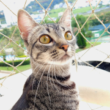

Muito obrigado pela sua visita! Meu nome é Gabriel Desiderá (ou Desi para os consagrados) e sou um estudante de engenharia elétrica na POLI-USP. Este projeto faz parte da minha jornada de aprendizado sobre HTML, JavaScript, CSS e diversas outras características de web development.
Se você tiver alguma crítica, sugestão, música maneira, meme ou dica, consegue falar comigo em gabriel.desidera@usp.br
Ainda estou trabalhando no port para mobile, nas funções que reduzem as equações booleanas às suas formas minimizadas, nas máquinas de estado, nos registradores etc...
Ainda não sei quais outras coisas aparecerão no site. Hang in there!